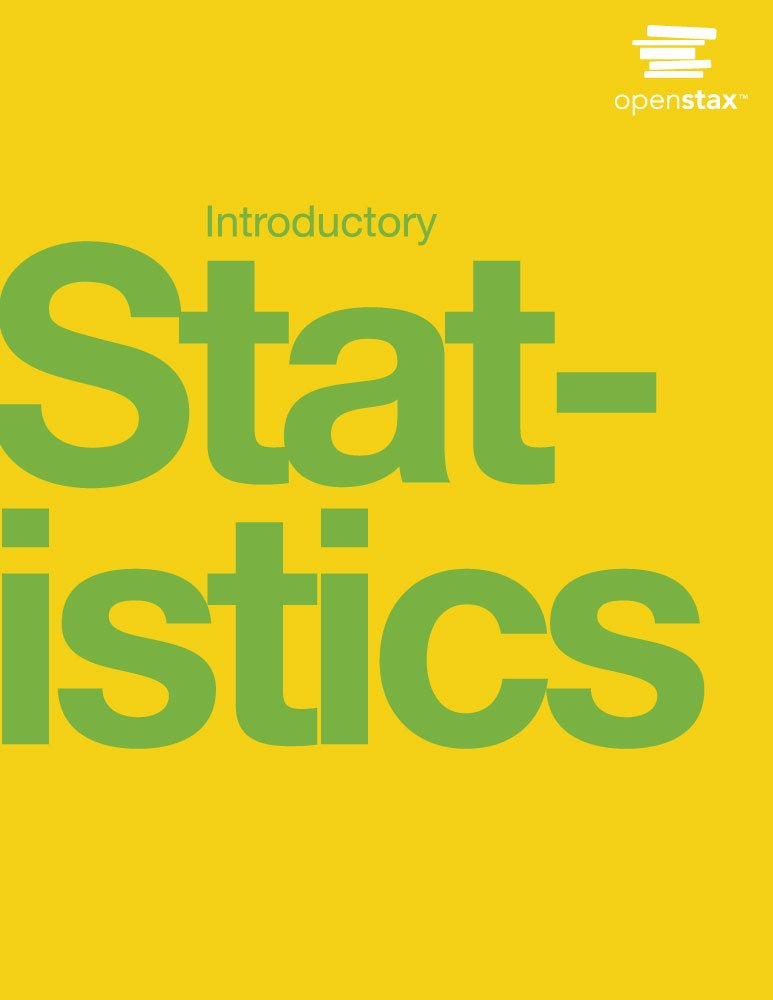

Syllabus
This syllabus is subject to change. All changes will be announced both in class, on Slack, and on this page.
Course info
Instructor: Victoria (Vic) Sass
Lecture: Mondays & Wednesdays, 9:10-11:20am
Location: Savery 132
Office Hours: Tuesdays 10am-12pm, or by appointment, on Zoom (link on Canvas)
Website: https://vsass.github.io/SOC221
Canvas: We will only be using the course Canvas site to upload assignments. Don’t message me on Canvas.
Contact: We’ll use Slack to communicate with each other and you can directly message me there.
Overview and learning objectives
This course is intended to provide an introduction to basic statistical techniques used by social scientists to better understand the world. We are all bombarded every day with information from all sorts of sources – television, online media, marketers, news outlets, and regular interactions with other people in a variety of settings. Figuring out how to organize, consolidate, analyze, and understand these data is at the core of the art and science of statistics. Statistics represent a set of tools that are not only useful for us, as citizens, to understand and interact with the social world, but are also extremely useful in a professional sense; mastery of the art of statistics is a great way to enhance your contributions to employers and the community organizations you serve.
The overall objective is to provide you with the ability to use basic statistical tools to critically evaluate data and to be an effective analytical consumer of information. Successful completion of the course will allow you to:
- Define real world questions and problems in statistical terms.
- Analyze data and solve statistical problems.
- Interpret the meaning of statistical solutions in relation to real world issues.
Prerequisites
There are no prerequisites for this course. This is not a mathematics course, but you are expected to be capable of doing arithmetic and very basic algebra. You will also be expected to be able to think through problems clearly and communicate your results. This course is designed to help you practice these skills.
Required materials

- Textbook: Introductory Statistics from OpenStax College
- The book is available in a wide variety of free online formats via the website linked above. You can use the book in whichever format(s) you like. I recommend that you download the entire PDF so that you always have access to your book.
- If you prefer a physical book, printed copies at a significantly reduced textbook rate are also for sale here.
- Although the textbook is completely free, if you have the means, I strongly encourage you to donate to support their efforts to reduce the cost of textbooks.
- Calculator: You will need a calculator that can add, subtract, multiply, divide, and take square roots. Bring this device to class every day. During quizzes you cannot use a device that communicates with other devices (such as a cell phone) as your calculator.
Ungrading and course structure
There is a disconnect between what grades are designed to do and what truly supports student learning. In an effort to focus on your education, assignments and quizzes will not receive a letter-grade or points. Rather, as you answer the questions for each assignment, you will also provide your own assessment of how well-prepared you felt to answer that particular question. At the core of the philosophy behind ungrading is the fact that each of us possesses the best information about our own learning - both what works and if it’s working. As such, I want you to be in control of reflecting on your own learning process throughout this class.
- For homework assignments you will receive written feedback from me about whether you’ve sufficiently demonstrated mastery of a topic and if not, where you can find assistance in answering that particular question. You’ll then have two additional days to revise any questions for resubmission.
- For quiz assignments you’ll spend the first part of class taking the quiz and after a break we’ll reconvene to go over the assignment together. If there were any questions you were less sure about, this is a great time to ask questions, and more fully articulate your answers.
This class is still being taught within the context of a university that assigns grades so I will be required to assign a final grade at the end of the quarter. What that grade ultimately is will be determined by you through your engagement with your assignment self-assessments, revisions on assignments, and the two learning assessment meetings we will have (one during week 4 and another our last week of class). During these two one-on-one meetings we will have a chance to discuss your learning process, what’s worked/what’s been challenging, how we can both suport the outcomes you desire, and what grade you feel reflects your process.
For this process to work effectively we are both required to attend every class and participate in ways that engage your learning[If something comes up and you cannot make it to class, message me as soon as possible on Slack.{.aside}. I will do my best to meet you where you are when you come to class and I ask that you engage in class and with assignments in ways that prioritize your learning.
Schedule
| Week | Date | Topic | Required Reading | Assignment Due (by 11:59pm) |
|---|---|---|---|---|
Accessibility and accommodations
Your experience in this class is important to me. If you have already established accommodations with Disability Resources for Students (DRS), please communicate your approved accommodations to me at your earliest convenience so we can discuss your needs in this course. If you have not yet established services through DRS, but have a temporary health condition or permanent disability that requires accommodations (conditions include but not limited to; mental health, attention-related, learning, vision, hearing, physical or health impacts), you are welcome to contact DRS at 206-543-8924, uwdrs@uw.edu, or through their website. DRS offers resources and coordinates reasonable accommodations for students with disabilities and/or temporary health conditions. Reasonable accommodations are established through an interactive process between you, me (your instructor), and DRS. It is the policy and practice of the University of Washington to create inclusive and accessible learning environments consistent with federal and state law.
Religious accommodations
Washington state law requires that UW develop a policy for accommodation of student absences or significant hardship due to reasons of faith or conscience, or for organized religious activities. The UW's policy, including more information about how to request an accommodation, is available at Religious Accommodations Policy. Accommodations must be requested within the first two weeks of this course using the Religious Accommodations Request form.
Academic honesty
Students are expected to abide by established regulations on student conduct. Any student found in violation of rules of student conduct will be removed from the class in accordance with state policy and appropriate disciplinary action will be pursued.
Basic needs statement
If you find yourself in need of health services, housing, food, or other basic resources, please use the resources listed below and/or visit the Resources page on the Sociology Department’s website. If you feel comfortable doing so, please contact me about any other unmet needs so that we can brainstorm other resources. Concerned with your own safety or the safety of others? Call SafeCampus at 206-685-7233
- Emergency Aid
- Campus Food Pantry
- Counseling Center
- Short Term Loans
- Office of Student Financial Aid
- Health and Wellness Office
- Hall Health
- Hall Health Mental Health
- Sexual Assault Resources
- Q Center (for queer community, including questioning)
- Disability Resources for Students
- wǝɫǝbʔaltxʷ – Intellectual House (for indigenous community)
- Office of Minority Affairs & Diversity
- International Student Center
- Undocumented Student Resources
If you have feedback on any part of this course or the classroom environment I want to hear it! You can message me directly on Slack or send me an anonymous message here.